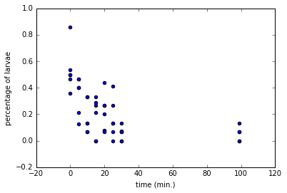
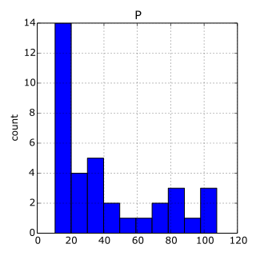
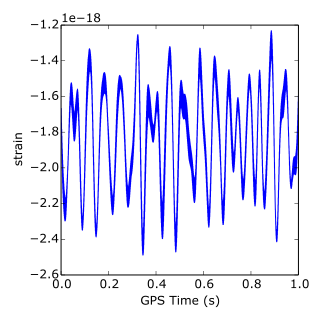

DataCamp Importing Data into Python 3¶
Foreword
Code snippets and excerpts from the courses. Python 3. From DataCamp.
1, Importing from Flat Files¶
- Load the script and run it.
# %load "Importing Data in Python.py"
file = open('moby_dick.txt', 'r')
# Print it
print(file.read())
# Check whether file is closed
print(file.closed)
# Close file
file.close()
# Check whether file is closed
print(file.closed)
CHAPTER 1. Loomings.
Call me Ishmael. Some years ago--never mind how long precisely--having
little or no money in my purse, and nothing particular to interest me on
shore, I thought I would sail about a little and see the watery part of
the world. It is a way I have of driving off the spleen and regulating
the circulation. Whenever I find myself growing grim about the mouth;
whenever it is a damp, drizzly November in my soul; whenever I find
myself involuntarily pausing before coffin warehouses, and bringing up
the rear of every funeral I meet; and especially whenever my hypos get
such an upper hand of me, that it requires a strong moral principle to
prevent me from deliberately stepping into the street, and methodically
knocking people's hats off--then, I account it high time to get to sea
as soon as I can. This is my substitute for pistol and ball. With a
philosophical flourish Cato throws himself upon his sword; I quietly
take to the ship. There is nothing surprising in this. If they but knew
it, almost all men in their degree, some time or other, cherish very
nearly the same feelings towards the ocean with me.
False
True
# Read & print the first 3 lines
with open('moby_dick.txt') as file:
print(file.readline())
print(file.readline())
print(file.readline())
print(file.readline(10))
print(file.readline(50))
print(file.readline(50))
CHAPTER 1. Loomings.
Call me Ishmael. Some years ago--never mind how long precisely--having
little or
no money in my purse, and nothing particular to in
terest me on
thisis a special package about PEP 20.
import this
The Zen of Python, by Tim Peters
Beautiful is better than ugly.
Explicit is better than implicit.
Simple is better than complex.
Complex is better than complicated.
Flat is better than nested.
Sparse is better than dense.
Readability counts.
Special cases aren't special enough to break the rules.
Although practicality beats purity.
Errors should never pass silently.
Unless explicitly silenced.
In the face of ambiguity, refuse the temptation to guess.
There should be one-- and preferably only one --obvious way to do it.
Although that way may not be obvious at first unless you're Dutch.
Now is better than never.
Although never is often better than *right* now.
If the implementation is hard to explain, it's a bad idea.
If the implementation is easy to explain, it may be a good idea.
Namespaces are one honking great idea -- let's do more of those!
- BDFL: Benevolent Dictator For Life, a.k.a. Guido van Rossum, Python’s creator.
Numpy¶
- NumPy arrays are a standard for storing numerical data.
- Arrays are essential to other packages such as the
scikit-learn, for machine learning. - Import
numpyandmatplotlib(or invoke them with the%pylabmagic command).
import numpy as np
import matplotlib.pyplot as plt
# or...
%pylab inline
# no need for preceeding functions (methods) with np. or plt.
Populating the interactive namespace from numpy and matplotlib
- Import a csv file and assign the content to an array.
file = 'digits.csv'
# Load the file as an array called digits
digits = loadtxt(file, delimiter = ',')
# Print the datatype of digits
print(type(digits))
print(digits)
# Select a row
im = digits[2, 2:]
print(im)
<class 'numpy.ndarray'>
[[ 1. 0. 0. 0. 0. 0.]
[ 0. 0. 0. 0. 0. 0.]
[ 1. 0. 0. 0. 0. 0.]
[ 2. 0. 0. 0. 0. 0.]
[ 0. 0. 0. 0. 0. 0.]
[ 5. 0. 0. 0. 0. 0.]]
[ 0. 0. 0. 0.]
- Import a txt file. The
delimitercan be'\t',',',';', etc. - Skip the first 90 rows.
file = 'digits_header.txt'
# Load the data into array data
data = loadtxt(file, delimiter=' ', skiprows = 90)
# Print data
print(data)
[[ 3. 0.]
[ 6. 0.]
[ 4. 0.]
[ 6. 0.]
[ 2. 0.]
[ 9. 0.]
[ 1. 0.]
[ 2. 0.]
[ 0. 0.]
[ 5. 0.]]
- Import a txt file, but only the last rows and first column.
data2 = loadtxt(file, delimiter=' ', skiprows = 90, usecols = [0])
# Print data
print(data2)
[ 3. 6. 4. 6. 2. 9. 1. 2. 0. 5.]
- Import a txt file as string.
file = 'seaslug.txt'
# Import file: data
data = loadtxt(file, delimiter = ' ', dtype = str)
# Print the first element of data
print(data[0])
['b"b\'Time\'"' 'b"b\'Percent\'"']
- Import a txt file as float numbers.
file = 'seaslug2.txt'
# Import data as floats and skip the first row: data_float
data_float = loadtxt(file, delimiter=' ', dtype = float, skiprows = 1)
# Print the 10th element of data_float
print(data_float[9])
# Plot a scatterplot of the data
scatter(data_float[:, 0], data_float[:, 1])
xlabel('time (min.)')
ylabel('percentage of larvae')
show()
[ 0. 0.357]

- Import a csv file. Format the data.
data = genfromtxt('titanic.csv', delimiter = ',', names = True, dtype = None)
# A structred array
shape(data)
(891,)
- Extract a row, a column.
# to get the ith row, merely execute data[i]
print(data[0:10])
[ (1, 0, 3, b" b'male'", 22.0, 1, 0, b" b'A/5 21171'", 7.25, b" b''", b" b'S'")
(2, 1, 1, b" b'female'", 38.0, 1, 0, b" b'PC 17599'", 71.2833, b" b'C85'", b" b'C'")
(3, 1, 3, b" b'female'", 26.0, 0, 0, b" b'STON/O2. 3101282'", 7.925, b" b''", b" b'S'")
(4, 1, 1, b" b'female'", 35.0, 1, 0, b" b'113803'", 53.1, b" b'C123'", b" b'S'")
(5, 0, 3, b" b'male'", 35.0, 0, 0, b" b'373450'", 8.05, b" b''", b" b'S'")
(6, 0, 3, b" b'male'", nan, 0, 0, b" b'330877'", 8.4583, b" b''", b" b'Q'")
(7, 0, 1, b" b'male'", 54.0, 0, 0, b" b'17463'", 51.8625, b" b'E46'", b" b'S'")
(8, 0, 3, b" b'male'", 2.0, 3, 1, b" b'349909'", 21.075, b" b''", b" b'S'")
(9, 1, 3, b" b'female'", 27.0, 0, 2, b" b'347742'", 11.1333, b" b''", b" b'S'")
(10, 1, 2, b" b'female'", 14.0, 1, 0, b" b'237736'", 30.0708, b" b''", b" b'C'")]
# to get the column with name 'Fare', execute data['Fare']
print(data['Fare'][0:10])
[ 7.25 71.2833 7.925 53.1 8.05 8.4583 51.8625 21.075
11.1333 30.0708]
- Import a csv file.
- Format the data.
# default dtype is None
data2 = recfromcsv('titanic.csv', delimiter = ',', names = True, dtype = None)
# Print out first three entries
print(data2[:3])
[ (1, 0, 3, b" b'male'", 22.0, 1, 0, b" b'A/5 21171'", 7.25, b" b''", b" b'S'")
(2, 1, 1, b" b'female'", 38.0, 1, 0, b" b'PC 17599'", 71.2833, b" b'C85'", b" b'C'")
(3, 1, 3, b" b'female'", 26.0, 0, 0, b" b'STON/O2. 3101282'", 7.925, b" b''", b" b'S'")]
Pandas¶
- Two-dimensional labeled data structure(s) or data frame (DataFrame).
- Pythonic analog of R’s dataframes.
- Columns can be of potentially different types.
- Excellent object for:
- Manipulate, slice, reshape, groupby, join, merge.
- Perform statistics.
- Work with time series data.
- Exploratory data analysis.
- Data wrangling.
- Data preprocessing.
- Building models.
- Visualization.
- There exists standards and best practices to use pandas.
# Import pandas
import pandas as pd
- Pandas is not part of
%pylab. - Import a file.
file = 'titanic.csv'
# Read the file into a DataFrame: df
df = pd.read_csv(file)
# View the head of the DataFrame
print(df.head())
Passengerid Survived Pclass Sex Age SibSp Parch \
0 1 0 3 b'male' 22.0 1 0
1 2 1 1 b'female' 38.0 1 0
2 3 1 3 b'female' 26.0 0 0
3 4 1 1 b'female' 35.0 1 0
4 5 0 3 b'male' 35.0 0 0
Ticket Fare Cabin Embarked
0 b'A/5 21171' 7.2500 b'' b'S'
1 b'PC 17599' 71.2833 b'C85' b'C'
2 b'STON/O2. 3101282' 7.9250 b'' b'S'
3 b'113803' 53.1000 b'C123' b'S'
4 b'373450' 8.0500 b'' b'S'
- Import another file; no header and some rows.
file = 'digits2.csv'
# Read the first 5 rows of the file into a DataFrame: data
data = pd.read_csv(file, nrows = 5, header = None)
# Print the datatype of data
print(type(data))
# Build a numpy array from the DataFrame: data_array
data_array = data.values
# Print the datatype of data_array to the shell
print(type(data_array))
<class 'pandas.core.frame.DataFrame'>
<class 'numpy.ndarray'>
- Import another file; replace the missing data (NA).
file = 'titanic_corrupt.csv'
# Assign filename: file
file = 'titanic_corrupt.csv'
# Import file: data
data = pd.read_csv(file, sep = ';', comment = '#', na_values = ['Nothing'])
# Print the head of the DataFrame
print(data.head())
PassengerId Survived Pclass Sex Age SibSp Parch \
0 1 0 3 male 22.0 1 0
1 2 1 1 female 38.0 1 0
2 3 1 3 female 26.0 0 0
3 4 1 1 female 35.0 1 0
4 5 0 3 male 35.0 0 0
Ticket Fare Cabin Embarked
0 A/5 21171 7,25 NaN S
1 PC 17599 NaN NaN NaN
2 STON/O2. 3101282 7,925 NaN S
3 113803 53,1 C123 S
4 373450 8,05 NaN S
- Plot the
Agevariable in a histogram.
pd.DataFrame.hist(data[['Age']])
plt.xlabel('Age (years)')
plt.ylabel('count')
plt.show()

2, Importing from Other Files¶
- With Pandas… and a bit of Numpy.
- Excel spreadsheets.
- MATLAB files.
- SAS files.
- Stata files.
- HDF5 files (large datasets, scientific, legal, etc.).
- Feather.
- Julia.
- Pickled files (binary).
import os
wd = os.getcwd()
os.listdir(wd)
['.ipynb_checkpoints',
'a_movie.json',
'cars.csv',
'count.svg',
'CYratioCyt.png',
'CYratioCyt.svg',
'digits.csv',
'digits2.csv',
'digits_header.txt',
'disa10.png',
'disa10.svg',
'economic.csv',
'economic2.xls',
'Importing Data into Python 3.ipynb',
'importing_python_ch1_pdf_slides.pdf',
'importing_python_ch2_pdf_slides.pdf',
'importing_python_ch3_pdf_slides.pdf',
'importing_python_ch4_pdf_slides.pdf',
'importing_python_ch5_pdf_slides.pdf',
'intermediate_python_ch1_slides.pdf',
'intermediate_python_ch2_slides.pdf',
'intermediate_python_ch3_slides.pdf',
'intermediate_python_ch4_slides.pdf',
'intermediate_python_ch5_slides.pdf',
'intro_python_ch1_slides.pdf',
'intro_python_ch2_slides.pdf',
'intro_python_ch3_slides.pdf',
'intro_python_ch4_slides.pdf',
'moby_dick.txt',
'new1.py',
'p.png',
'PRIO_bd3.0.xls',
'Python 3.ipynb',
'Python3.py',
'sales.sas7bdat',
'save.p',
'seaslug.txt',
'seaslug2.txt',
'strain.png',
'strain.svg',
'Thumbs.db',
'titanic.csv',
'titanic_corrupt.csv',
'tweets_figure.png',
'tweets_figure.svg',
'winequality-red.csv']
Pickled files
- There are a number of datatypes that cannot be saved easily to flat files, such as lists and dictionaries.
- If you want your files to be human readable, you may want to save them as text files in a clever manner (JSONs, which you will see in a later chapter, are appropriate for Python dictionaries).
- If, however, you merely want to be able to import them into Python, you can serialize them.
- All this means is converting the object into a sequence of bytes, or bytestream.
- Import it.
import pickle
# Save a dictionary into a pickle file.
fav = {'Airline' : '8', 'Aug' : '85', 'June' : '69.4', 'Mar' : '84.4'}
pickle.dump(fav, open("save.p", "wb"))
# save.p
# Open pickle file and load data: d
with open('save.p', 'rb') as file:
d = pickle.load(file)
# Print d
print(d)
# Print datatype of d
print(type(d))
{'Aug': '85', 'Airline': '8', 'Mar': '84.4', 'June': '69.4'}
<class 'dict'>
Excel files
file = 'PRIO_bd3.0.xls'
# Load spreadsheet: xl
xl = pd.ExcelFile(file)
# Print sheet names
print(xl.sheet_names)
['bdonly']
- Parse the sheets.
- By name or by number (first, second, …).
df1 = xl.parse('bdonly')
df2 = xl.parse(0)
- Options: parse the first sheet by index, skip the first row of data, then name the columns ‘Country’ and ‘AAM due to War (2002)’
df2 = xl.parse(0, parse_cols = [0], skiprows = [0], names = ['Country', 'AAM due to War (2002)'])
- Options: parse the second sheet, parse only the first column, skip the first row and rename the column ‘Country’.
df2 = xl.parse(1, parse_cols = [0], skiprows = [0], names = ['Country'])
- Print the head of the DataFrame.
print(df1.head())
id year bdeadlow bdeadhig bdeadbes annualdata source bdversion \
0 1 1946 1000 9999 1000 2 1 3
1 1 1952 450 3000 -999 2 1 3
2 1 1967 25 999 82 2 1 3
3 2 1946 25 999 -999 0 0 3
4 2 1947 25 999 -999 0 0 3
location sidea ... epend ependdate ependprec gwnoa gwnoa2nd \
0 Bolivia Bolivia ... 1 1946-07-21 -99.0 145 NaN
1 Bolivia Bolivia ... 1 1952-04-12 -99.0 145 NaN
2 Bolivia Bolivia ... 1 1967-10-16 -99.0 145 NaN
3 Cambodia France ... 0 NaT NaN 220 NaN
4 Cambodia France ... 0 NaT NaN 220 NaN
gwnob gwnob2nd gwnoloc region version
0 NaN NaN 145 5 2009-4
1 NaN NaN 145 5 2009-4
2 NaN NaN 145 5 2009-4
3 NaN NaN 811 3 2009-4
4 NaN NaN 811 3 2009-4
[5 rows x 32 columns]
- We process images since we cheat a little.
- Many packages are not installed.
- We are not be able to import some data.
- Images will then present the final results.
from IPython.display import Image
# for the following pictures...
SAS files
- Advanced analytics
- Multivariate analysis
- Business intelligence
- Data management
- Predictive analytics
- Standard for computational analysis
- Code (instead of importing the package):
# Import sas7bdat package
from sas7bdat import SAS7BDAT
# Save file to a DataFrame: df_sas
with SAS7BDAT('sales.sas7bdat') as file:
df_sas = file.to_data_frame()
# Print head of DataFrame
print(df_sas.head())
# Plot histogram of DataFrame features
pd.DataFrame.hist(df_sas[['P']])
plt.ylabel('count')
plt.show()
- The data are adapted from the website of the undergraduate text book Principles of Economics by Hill, Griffiths and Lim (http://www.principlesofeconometrics.com/sas/).
- The chart would be:
Image('p.png')

Stata files
- The data consist of disease extent for several diseases in various countries (more information can be found at http://www.cid.harvard.edu/ciddata/geog/readme_disarea.html).
# Import pandas
import pandas as pd
# Load Stata file into a pandas DataFrame: df
df = pd.read_stata('disarea.dta')
# Print the head of the DataFrame df
print(df.head())
wbcode country disa1 disa2 disa3 disa4 disa5 disa6 \
0 AFG Afghanistan 0.00 0.00 0.76 0.73 0.0 0.00
1 AGO Angola 0.32 0.02 0.56 0.00 0.0 0.00
2 ALB Albania 0.00 0.00 0.02 0.00 0.0 0.00
3 ARE United Arab Emirates 0.00 0.00 0.00 0.00 0.0 0.00
4 ARG Argentina 0.00 0.24 0.24 0.00 0.0 0.23
disa7 disa8 ... disa16 disa17 disa18 disa19 disa20 disa21 \
0 0.00 0.0 ... 0.0 0.0 0.0 0.00 0.00 0.0
1 0.56 0.0 ... 0.0 0.4 0.0 0.61 0.00 0.0
2 0.00 0.0 ... 0.0 0.0 0.0 0.00 0.00 0.0
3 0.00 0.0 ... 0.0 0.0 0.0 0.00 0.00 0.0
4 0.00 0.0 ... 0.0 0.0 0.0 0.00 0.05 0.0
disa22 disa23 disa24 disa25
0 0.00 0.02 0.00 0.00
1 0.99 0.98 0.61 0.00
2 0.00 0.00 0.00 0.16
3 0.00 0.00 0.00 0.00
4 0.00 0.01 0.00 0.11
[5 rows x 27 columns]
- Plot histogram of one column of the DataFrame.
pd.DataFrame.hist(df[['disa10']])
plt.xlabel('Extent of disease')
plt.ylabel('Number of coutries')
plt.show()

HDF5 files
- Standard for storing large quantities of numerical data.
- Datasets can be hundreds of gigabytes or terabytes.
- HDF5 can scale to exabytes.
- Code (instead of importing the package):
# Import packages
import numpy as np
import h5py
# Assign filename: file
file = 'LIGO_data.hdf5'
# Load file: data
data = h5py.File(file, 'r')
# Print the datatype of the loaded file
print(type(data))
# Print the keys of the file
for key in data.keys():
print(key)
# Get the HDF5 group: group
group = data['strain']
# Check out keys of group
for key in group.keys():
print(key)
# Set variable equal to time series data: strain
strain = data['strain']['Strain'].value
# Set number of time points to sample: num_samples
num_samples = 10000
# Set time vector
time = np.arange(0, 1, 1/num_samples)
# Plot data
plt.plot(time, strain[:num_samples])
plt.xlabel('GPS Time (s)')
plt.ylabel('strain')
plt.show()
- You can find the LIGO data plus loads of documentation and tutorials (https://losc.ligo.org/events/GW150914/) and (https://losc.ligo.org/s/events/GW150914/GW150914_tutorial.html) is a great tutorial on Signal Processing with the data.
Image('strain.png')

MATLAB
- “Matrix Laboratory”.
- Industry standard in engineering and science.
- Code (instead of importing the package):
# Import package
import scipy.io
# Load MATLAB file: mat
mat = scipy.io.loadmat('albeck_gene_expression.mat')
# Print the datatype type of mat
print(type(mat))
# Print the keys of the MATLAB dictionary
print(mat.keys())
# Print the type of the value corresponding to the key 'CYratioCyt'
print(type(mat['CYratioCyt']))
# Print the shape of the value corresponding to the key 'CYratioCyt'
print(np.shape(mat['CYratioCyt']))
# Subset the array and plot it
data = mat['CYratioCyt'][25, 5:]
fig = plt.figure()
plt.plot(data)
plt.xlabel('time (min.)')
plt.ylabel('normalized fluorescence (measure of expression)')
plt.show()
- This file contains gene expression data from the Albeck Lab at UC Davis (https://www.mcb.ucdavis.edu/faculty-labs/albeck/workshop.htm). You can find the data and some great documentation.
Image('CYratioCyt.png')

3, Working with Relational Databases¶
Relational Database Management System
- PostgreSQL.
- MySQL.
- SQLite.
- Code (instead of importing the package):
# Import necessary module
from sqlalchemy import create_engine
# Create engine: engine
engine = create_engine('sqlite:///Chinook.sqlite')
'sqlite:///Northwind.sqlite' is called the connection string to the SQLite database.
- The Chinook database (http://chinookdatabase.codeplex.com/) contains information about a semi-fictional digital media store in which media data is real and customer, employee and sales data has been manually created.
- Code (instead of importing the package):
# Save the table names to a list: table_names
table_names = engine.table_names()
# Print the table names to the shell
print(table_names)
Query the DB
- The final
;is facultative. - Code (instead of importing the package):
# Create engine: engine
engine = create_engine('sqlite:///Chinook.sqlite')
# Open engine connection: con
con = engine.connect()
# Perform query: rs
rs = con.execute('SELECT * FROM Album')
# Save results of the query to DataFrame: df
df = pd.DataFrame(rs.fetchall())
# Close connection
con.close()
# Print head of DataFrame df
print(df.head())
Customize queries
- Code (instead of importing the package):
# Create engine: engine
engine = create_engine('sqlite:///Chinook.sqlite') # becomes facultative with many queries
# Open engine in context manager
# Perform query and save results to DataFrame: df
with engine.connect() as con:
rs = con.execute('SELECT LastName, Title FROM Employee')
df = pd.DataFrame(rs.fetchmany(size = 3))
df.columns = rs.keys() # set the DataFrame's column names to the corresponding names of the table columns
# Print the length of the DataFrame df
print(len(df))
# Print the head of the DataFrame df
print(df.head())
- Code (instead of importing the package):
# Create engine: engine
engine = create_engine('sqlite:///Chinook.sqlite') # becomes facultative with many queries
# Open engine in context manager
# Perform query and save results to DataFrame: df
with engine.connect() as con:
rs = con.execute("SELECT * FROM Employee WHERE EmployeeId >= 6")
df = pd.DataFrame(rs.fetchall())
df.columns = rs.keys()
# Print the head of the DataFrame df
print(df.head())
- Code (instead of importing the package):
# Create engine: engine
engine = create_engine('sqlite:///Chinook.sqlite')
# Open engine in context manager
with engine.connect() as con:
rs = con.execute('SELECT * FROM Employee ORDER BY BirthDate')
df = pd.DataFrame(rs.fetchall())
# Set the DataFrame's column names
df.columns = rs.keys()
# Print head of DataFrame
print(df.head())
Query the DB the Pandas way
- Simpler code (instead of importing the package)!!!
# Import packages
from sqlalchemy import create_engine
import pandas as pd
# Create engine: engine
engine = create_engine('sqlite:///Chinook.sqlite')
# Execute query and store records in DataFrame: df
df = pd.read_sql_query("SELECT * FROM Album", engine)
# Print head of DataFrame
print(df.head())
# Open engine in context manager
# Perform query and save results to DataFrame: df1
with engine.connect() as con:
rs = con.execute("SELECT * FROM Album")
df1 = pd.DataFrame(rs.fetchall())
df1.columns = rs.keys()
# Confirm that both methods yield the same result: does df = df1 ?
print(df.equals(df1))
- Code (instead of importing the package):
# Import packages
from sqlalchemy import create_engine
import pandas as pd
# Create engine: engine
engine = create_engine('sqlite:///Chinook.sqlite')
# Execute query and store records in DataFrame: df
df = pd.read_sql_query("SELECT * FROM Employee WHERE EmployeeId >= 6 ORDER BY BirthDate", engine)
# Print head of DataFrame
print(df.head())
INNER JOIN
- Code (instead of importing the package):
import pandas as pd
from sqlalchemy import create_engine
engine = create_engine('sqlite:///Chinook.sqlite')
# Open engine in context manager
# Perform query and save results to DataFrame: df
with engine.connect() as con:
rs = con.execute("SELECT Title, Name FROM Album INNER JOIN Artist on Album.ArtistID = Artist.ArtistID")
df = pd.DataFrame(rs.fetchall())
df.columns = rs.keys()
# Print head of DataFrame df
print(df.head())
- Alternative code:
df = pd.read_sql_query("SELECT Title, Name FROM Album INNER JOIN Artist on Album.ArtistID = Artist.ArtistID", engine)
# Print head of DataFrame df
print(df.head())
- Code (instead of importing the package):
# Execute query and store records in DataFrame: df
df = pd.read_sql_query("SELECT * FROM PlaylistTrack INNER JOIN Track on PlaylistTrack.TrackId = Track.TrackId WHERE Milliseconds < 250000", engine)
# Print head of DataFrame
print(df.head())
4, Importing Flat Files from the Web (Web Scraping)¶
scrape, wrangle, munge, wrangling, munging
- Import and locally save datasets from the web.
- Load datasets into pandas DataFrames.
- Make HTTP requests (GET requests).
- Scrape web data such as HTML.
- Parse HTML into useful data (BeautifulSoup).
- Use the urllib and requests packages.
Using the urllib package on csv files
- Import the package.
from urllib.request import urlretrieve
# import pandas as pd
# Assign url of file: url
url = 'http://archive.ics.uci.edu/ml/machine-learning-databases/wine-quality/winequality-red.csv'
# Save file locally
urlretrieve(url, 'winequality-red.csv')
# Read file into a DataFrame and print its head
df = pd.read_csv('winequality-red.csv', sep=';')
print(df.head())
fixed acidity volatile acidity citric acid residual sugar chlorides \
0 7.4 0.70 0.00 1.9 0.076
1 7.8 0.88 0.00 2.6 0.098
2 7.8 0.76 0.04 2.3 0.092
3 11.2 0.28 0.56 1.9 0.075
4 7.4 0.70 0.00 1.9 0.076
free sulfur dioxide total sulfur dioxide density pH sulphates \
0 11.0 34.0 0.9978 3.51 0.56
1 25.0 67.0 0.9968 3.20 0.68
2 15.0 54.0 0.9970 3.26 0.65
3 17.0 60.0 0.9980 3.16 0.58
4 11.0 34.0 0.9978 3.51 0.56
alcohol quality
0 9.4 5
1 9.8 5
2 9.8 5
3 9.8 6
4 9.4 5
# import matplotlib.pyplot as plt
# import pandas as pd
# Assign url of file: url
url = 'http://archive.ics.uci.edu/ml/machine-learning-databases/wine-quality/winequality-red.csv'
# Read file into a DataFrame: df
df = pd.read_csv(url, sep = ';')
# Print the head of the DataFrame
print(df.head())
# Plot first column of df
pd.DataFrame.hist(df.ix[:, 0:1])
plt.xlabel('fixed acidity (g(tartaric acid)/dm$^3$)')
plt.ylabel('count')
plt.show()
fixed acidity volatile acidity citric acid residual sugar chlorides \
0 7.4 0.70 0.00 1.9 0.076
1 7.8 0.88 0.00 2.6 0.098
2 7.8 0.76 0.04 2.3 0.092
3 11.2 0.28 0.56 1.9 0.075
4 7.4 0.70 0.00 1.9 0.076
free sulfur dioxide total sulfur dioxide density pH sulphates \
0 11.0 34.0 0.9978 3.51 0.56
1 25.0 67.0 0.9968 3.20 0.68
2 15.0 54.0 0.9970 3.26 0.65
3 17.0 60.0 0.9980 3.16 0.58
4 11.0 34.0 0.9978 3.51 0.56
alcohol quality
0 9.4 5
1 9.8 5
2 9.8 5
3 9.8 6
4 9.4 5

Using the urllib package on Excel files
# import pandas as pd
# Assign url of file: url
url = 'http://s3.amazonaws.com/assets.datacamp.com/course/importing_data_into_r/latitude.xls'
# Read in all sheets of Excel file: xl
xl = pd.read_excel(url, sheetname = None)
# Print the sheetnames (keys) to the shell !!!
print(xl.keys())
# Print the head of the first sheet (using its name, NOT its index)
print(xl['1700'].head())
dict_keys(['1700', '1900'])
country 1700
0 Afghanistan 34.565000
1 Akrotiri and Dhekelia 34.616667
2 Albania 41.312000
3 Algeria 36.720000
4 American Samoa -14.307000
HTTP requests to import files from the web
requestsis one of the most downloaded Python packages.requestsworks withurllib.- Import the package.
from urllib.request import urlopen, Request
# Specify the url
url = "http://www.datacamp.com/teach/documentation"
# This packages the request: request
request = Request(url)
# Send the request and catches the response: response
response = urlopen(request)
# Print the datatype of response
print(type(response))
# Be polite and close the response!
response.close()
<class 'http.client.HTTPResponse'>
from urllib.request import urlopen, Request
url = "http://docs.datacamp.com/teach/"
request = Request(url)
response = urlopen(request)
# Extract the response: html
html = response.read()
# Print the html
print(html)
# Be polite and close the response!
response.close()
b'<!DOCTYPE html>\n<link rel="shortcut icon" href="images/favicon.ico" />\n<html>\n\n <head>\n <meta charset="utf-8">\n <meta http-equiv="X-UA-Compatible" content="IE=edge">\n <meta name="viewport" content="width=device-width, initial-scale=1">\n\n <title>Home</title>\n <meta name="description" content="All Documentation on Course Creation">\n\n <link rel="stylesheet" href="/teach/css/main.css">\n <link rel="canonical" href="/teach/">\n <link rel="alternate" type="application/rss+xml" title="DataCamp Teach Documentation" href="/teach/feed.xml" />\n</head>\n\n\n <body>\n\n <header class="site-header">\n\n <div class="wrapper">\n\n <a class="site-title" href="/teach/">DataCamp Teach Documentation</a>\n\n </div>\n\n</header>\n\n\n <div class="page-content">\n <div class="wrapper">\n <p>The Teach Documentation has been moved to <a href="https://www.datacamp.com/teach/documentation">https://www.datacamp.com/teach/documentation</a>!</p>\n\n<!-- Everybody can teach on DataCamp. The resources on this website explain all the steps to build your own course on DataCamp\'s interactive data science platform.\n\nInterested in partnering with DataCamp? Head over to the [Course Material](/teach/course-material.html) page to get an idea of the requirements to build your own interactive course together with DataCamp!\n\n## Table of Contents\n\n- [Course Material](/teach/course-material.html) - Content required to build a DataCamp course.\n- [Video Lectures](/teach/video-lectures.html) - Details on video recording and editing.\n- [DataCamp Teach](https://www.datacamp.com/teach) - Use the DataCamp Teach website to create DataCamp courses (preferred).\n- [datacamp R Package](https://github.com/datacamp/datacamp/wiki) - Use R Package to create DataCamp courses (legacy).\n- [Code DataCamp Exercises](/teach/code-datacamp-exercises.html)\n- [SCT Design (R)](https://github.com/datacamp/testwhat/wiki)\n- [SCT Design (Python)](https://github.com/datacamp/pythonwhat/wiki)\n- [Style Guide](/teach/style-guide.html) -->\n\n\n </div>\n </div>\n\n \n\n </body>\n\n</html>\n'
Using requests
import requests
url = "http://docs.datacamp.com/teach/"
r = requests.get(url)
text = r.text
# Print part of the html (split the paragraphs) instead of all with print(text)
head = text.split('\n\n')
print(head[0])
print('')
print(head[1])
print('')
print(head[2])
print('')
print(head[3])
<!DOCTYPE html>
<link rel="shortcut icon" href="images/favicon.ico" />
<html>
<head>
<meta charset="utf-8">
<meta http-equiv="X-UA-Compatible" content="IE=edge">
<meta name="viewport" content="width=device-width, initial-scale=1">
<title>Home</title>
<meta name="description" content="All Documentation on Course Creation">
<link rel="stylesheet" href="/teach/css/main.css">
<link rel="canonical" href="/teach/">
<link rel="alternate" type="application/rss+xml" title="DataCamp Teach Documentation" href="/teach/feed.xml" />
</head>
Scraping the web
scrape, wrangle, munge
- Scrape unstructured data.
- Scrape structured data, parse it and extract the data from HTML using the
BeautifulSouppackage. - Import the packages.
import requests
from bs4 import BeautifulSoup
url = 'https://www.python.org/~guido/'
r = requests.get(url)
html_doc = r.text
# Create a BeautifulSoup object from the HTML: soup
soup = BeautifulSoup(html_doc, 'lxml')
# Prettify the BeautifulSoup object: pretty_soup
pretty_soup = soup.prettify()
# Print the response
print(type(pretty_soup))
# Print part of the html (split the text), not all with print(pretty_soup)
head = pretty_soup.split('</h3>')
print(head[0])
<class 'str'>
<html>
<head>
<title>
Guido's Personal Home Page
</title>
</head>
<body bgcolor="#FFFFFF" text="#000000">
<h1>
<a href="pics.html">
<img border="0" src="images/IMG_2192.jpg"/>
</a>
Guido van Rossum - Personal Home Page
</h1>
<p>
<a href="http://www.washingtonpost.com/wp-srv/business/longterm/microsoft/stories/1998/raymond120398.htm">
<i>
"Gawky and proud of it."
</i>
</a>
</p>
<h3>
<a href="http://metalab.unc.edu/Dave/Dr-Fun/df200004/df20000406.jpg">
Who
I Am
</a>
- Other operations with
BeautifulSoup.
import requests
from bs4 import BeautifulSoup
url = 'https://www.python.org/~guido/'
r = requests.get(url)
html_doc = r.text
# Create a BeautifulSoup object from the HTML: soup
soup = BeautifulSoup(html_doc, 'lxml')
# Get the title of Guido's webpage: guido_title
guido_title = soup.title # attribute
# Print the title of Guido's webpage to the shell
print(guido_title)
# Get Guido's text: guido_text
guido_text = soup.get_text() # method
# Print Guido's text to the shell
print(guido_text)
<title>Guido's Personal Home Page</title>
Guido's Personal Home Page
Guido van Rossum - Personal Home Page
"Gawky and proud of it."
Who
I Am
I am the author of the Python
programming language. See also my resume
and my publications list, a brief bio, assorted writings, presentations and interviews (all about Python), some
pictures of me,
my new blog, and
my old
blog on Artima.com. I am
@gvanrossum on Twitter. I
also have
a G+
profile.
In January 2013 I joined
Dropbox. I work on various Dropbox
products and have 50% for my Python work, no strings attached.
Previously, I have worked for Google, Elemental Security, Zope
Corporation, BeOpen.com, CNRI, CWI, and SARA. (See
my resume.) I created Python while at CWI.
How to Reach Me
You can send email for me to guido (at) python.org.
I read everything sent there, but if you ask
me a question about using Python, it's likely that I won't have time
to answer it, and will instead refer you to
help (at) python.org,
comp.lang.python or
StackOverflow. If you need to
talk to me on the phone or send me something by snail mail, send me an
email and I'll gladly email you instructions on how to reach me.
My Name
My name often poses difficulties for Americans.
Pronunciation: in Dutch, the "G" in Guido is a hard G,
pronounced roughly like the "ch" in Scottish "loch". (Listen to the
sound clip.) However, if you're
American, you may also pronounce it as the Italian "Guido". I'm not
too worried about the associations with mob assassins that some people
have. :-)
Spelling: my last name is two words, and I'd like keep it
that way, the spelling on some of my credit cards notwithstanding.
Dutch spelling rules dictate that when used in combination with my
first name, "van" is not capitalized: "Guido van Rossum". But when my
last name is used alone to refer to me, it is capitalized, for
example: "As usual, Van Rossum was right."
Alphabetization: in America, I show up in the alphabet under
"V". But in Europe, I show up under "R". And some of my friends put
me under "G" in their address book...
More Hyperlinks
Here's a collection of essays relating to Python
that I've written, including the foreword I wrote for Mark Lutz' book
"Programming Python".
I own the official
Python license.
The Audio File Formats FAQ
I was the original creator and maintainer of the Audio File Formats
FAQ. It is now maintained by Chris Bagwell
at http://www.cnpbagwell.com/audio-faq. And here is a link to
SOX, to which I contributed
some early code.
"On the Internet, nobody knows you're
a dog."
- More.
import requests
from bs4 import BeautifulSoup
url = 'https://www.python.org/~guido/'
r = requests.get(url)
html_doc = r.text
# create a BeautifulSoup object from the HTML: soup
soup = BeautifulSoup(html_doc, 'lxml')
# Print the title of Guido's webpage
print(soup.title)
# Find all 'a' tags (which define hyperlinks): a_tags
a_tags = soup.find_all('a') # for <a>, hyperlinks
# Print the URLs to the shell
for link in a_tags:
print( link.get('href'))
<title>Guido's Personal Home Page</title>
pics.html
http://www.washingtonpost.com/wp-srv/business/longterm/microsoft/stories/1998/raymond120398.htm
http://metalab.unc.edu/Dave/Dr-Fun/df200004/df20000406.jpg
http://www.python.org
Resume.html
Publications.html
bio.html
http://legacy.python.org/doc/essays/
http://legacy.python.org/doc/essays/ppt/
interviews.html
pics.html
http://neopythonic.blogspot.com
http://www.artima.com/weblogs/index.jsp?blogger=12088
https://twitter.com/gvanrossum
https://plus.google.com/u/0/115212051037621986145/posts
http://www.dropbox.com
Resume.html
http://groups.google.com/groups?q=comp.lang.python
http://stackoverflow.com
guido.au
http://legacy.python.org/doc/essays/
images/license.jpg
http://www.cnpbagwell.com/audio-faq
http://sox.sourceforge.net/
images/internetdog.gif
5, Introduction to APIs and JSONs¶
- API or Application Programming Interface are protocols and routines providing access to websites and web apps like OMDb, Wikipedia, Uber, Uber Developers, BGG, ImDB, Facebook, Instagram, and Twitter.
- Most of data coming from APIS are JSON files.
Import the json package
import json
# Load JSON: json_data
with open('a_movie.json', 'r') as json_file:
json_data = json.load(json_file)
print(type(json_data))
print(json_data['Title'])
print(json_data['Year'])
print('')
# Print each key-value pair in json_data
for k in json_data.keys():
print(k + ': ', json_data[k])
<class 'dict'>
The Social Network
2010
Response: True
Rated: PG-13
Poster: http://ia.media-imdb.com/images/M/MV5BMTM2ODk0NDAwMF5BMl5BanBnXkFtZTcwNTM1MDc2Mw@@._V1_SX300.jpg
imdbID: tt1285016
Year: 2010
Awards: Won 3 Oscars. Another 161 wins & 162 nominations.
Metascore: 95
Language: English, French
Country: USA
Plot: Harvard student Mark Zuckerberg creates the social networking site that would become known as Facebook, but is later sued by two brothers who claimed he stole their idea, and the co-founder who was later squeezed out of the business.
imdbRating: 7.7
Actors: Jesse Eisenberg, Rooney Mara, Bryan Barter, Dustin Fitzsimons
Title: The Social Network
imdbVotes: 478,258
Released: 01 Oct 2010
Runtime: 120 min
Genre: Biography, Drama
Type: movie
Director: David Fincher
Writer: Aaron Sorkin (screenplay), Ben Mezrich (book)
The requests package again
- Pull some movie data down from the Open Movie Database (OMDB) using their API.
- Pull it as text.
import requests
url = 'http://www.omdbapi.com/?t=social+network'
r = requests.get(url)
print(type(r))
print('')
# Print the text of the response
print(r.text)
<class 'requests.models.Response'>
{"Title":"The Social Network","Year":"2010","Rated":"PG-13","Released":"01 Oct 2010","Runtime":"120 min","Genre":"Biography, Drama","Director":"David Fincher","Writer":"Aaron Sorkin (screenplay), Ben Mezrich (book)","Actors":"Jesse Eisenberg, Rooney Mara, Bryan Barter, Dustin Fitzsimons","Plot":"Harvard student Mark Zuckerberg creates the social networking site that would become known as Facebook, but is later sued by two brothers who claimed he stole their idea, and the co-founder who was later squeezed out of the business.","Language":"English, French","Country":"USA","Awards":"Won 3 Oscars. Another 161 wins & 162 nominations.","Poster":"http://ia.media-imdb.com/images/M/MV5BMTM2ODk0NDAwMF5BMl5BanBnXkFtZTcwNTM1MDc2Mw@@._V1_SX300.jpg","Metascore":"95","imdbRating":"7.7","imdbVotes":"478,258","imdbID":"tt1285016","Type":"movie","Response":"True"}
- Pull it as JSON or a dictionary.
import requests
url = 'http://www.omdbapi.com/?t=social+network'
r = requests.get(url)
# Decode the JSON data into a dictionary: json_data
json_data = r.json()
print(type(json_data))
print('')
# Print each key-value pair in json_data
for k in json_data.keys():
print(k + ': ', json_data[k])
<class 'dict'>
Response: True
Rated: PG-13
Poster: http://ia.media-imdb.com/images/M/MV5BMTM2ODk0NDAwMF5BMl5BanBnXkFtZTcwNTM1MDc2Mw@@._V1_SX300.jpg
imdbID: tt1285016
Year: 2010
Metascore: 95
Language: English, French
Country: USA
Awards: Won 3 Oscars. Another 161 wins & 162 nominations.
Plot: Harvard student Mark Zuckerberg creates the social networking site that would become known as Facebook, but is later sued by two brothers who claimed he stole their idea, and the co-founder who was later squeezed out of the business.
Director: David Fincher
imdbRating: 7.7
Actors: Jesse Eisenberg, Rooney Mara, Bryan Barter, Dustin Fitzsimons
imdbVotes: 478,258
Released: 01 Oct 2010
Runtime: 120 min
Genre: Biography, Drama
Type: movie
Title: The Social Network
Writer: Aaron Sorkin (screenplay), Ben Mezrich (book)
- Search the Library of Congress.
- Pull a dictionary of dictionaries.
import requests
url = 'http://chroniclingamerica.loc.gov/search/titles/results/?terms=new%20york&format=json'
r = requests.get(url)
# Decode the JSON data into a dictionary: json_data
json_data = r.json()
# Select the first element in the list json_data['items']: nyc_loc
# dict of dict
nyc_loc = json_data['items'][0]
# Print each key-value pair in nyc_loc
for k in nyc_loc.keys():
print(k + ': ', nyc_loc[k])
county: ['New York']
place_of_publication: New York
oclc: 12928956
subject: ['New York (N.Y.)--Newspapers.', 'New York (State)--New York.--fast--(OCoLC)fst01204333']
alt_title: []
title: The New York thrice-a-week world.
type: title
edition: New York and Pennsylvania ed.
id: /lccn/sn85047837/
note: ['Democrat.', 'Description based on: Vol. 36, no. 3,670 (Oct. 4, 1895).', 'The words "New York thrice-a-week" appear in title ornament.']
place: ['New York--New York--New York']
essay: []
start_year: 1890
end_year: 1999
publisher: Press Pub. Co.
lccn: sn85047837
holding_type: ['Unspecified']
state: ['New York']
city: ['New York']
language: ['English']
country: New York
title_normal: new york thrice-a-week world.
url: http://chroniclingamerica.loc.gov/lccn/sn85047837.json
frequency: Three times a week
- The Wikipedia API.
- Documentation: https://www.mediawiki.org/wiki/API:Main_page
- Dictionary of dictionary of dictionary.
import requests
url = 'https://en.wikipedia.org/w/api.php?action=query&prop=extracts&format=json&exintro=&titles=pizza'
r = requests.get(url)
# Decode the JSON data into a dictionary: json_data
json_data = r.json()
# Print the Wikipedia page extract
pizza_extract = json_data['query']['pages']['24768']['extract']
print(pizza_extract)
<p><b>Pizza</b> is a flatbread generally topped with tomato sauce and cheese and baked in an oven. It is commonly topped with a selection of meats, vegetables and condiments. The term was first recorded in the 10th century, in a Latin manuscript from Gaeta in Central Italy. The modern pizza was invented in Naples, Italy, and the dish and its variants have since become popular in many areas of the world.</p>
<p>In 2009, upon Italy's request, Neapolitan pizza was safeguarded in the European Union as a Traditional Speciality Guaranteed dish. The Associazione Verace Pizza Napoletana (the True Neapolitan Pizza Association) is a non-profit organization founded in 1984 with headquarters in Naples. It promotes and protects the "true Neapolitan pizza".</p>
<p>Pizza is sold fresh or frozen, either whole or in portions, and is a common fast food item in Europe and North America. Various types of ovens are used to cook them and many varieties exist. Several similar dishes are prepared from ingredients commonly used in pizza preparation, such as calzone and stromboli.</p>
<p></p>
The Twitter API and Authentification
- Twitter has many APIs: the main API, the REST API, Streaming APIs (private, public), Firehouse (expensive), etc.
- Field Guide: https://dev.twitter.com/overview/api/tweets
- Consult the documentation to set an authentification key (available online).
tweepy package
- The authentication looks like the following:
- Code:
# Import package
import tweepy, json
# Store OAuth authentication credentials in relevant variables
access_token = "1092294848-aHN7DcRP9B4VMTQIhwqOYiB14YkW92fFO8k8EPy"
access_token_secret = "X4dHmhPfaksHcQ7SCbmZa2oYBBVSD2g8uIHXsp5CTaksx"
consumer_key = "nZ6EA0FxZ293SxGNg8g8aP0HM"
consumer_secret = "fJGEodwe3KiKUnsYJC3VRndj7jevVvXbK2D5EiJ2nehafRgA6i"
# Pass OAuth details to tweepy's OAuth handler
auth = tweepy.OAuthHandler(consumer_key, consumer_secret)
auth.set_access_token(access_token, access_token_secret)
Start streaming tweets
- Code:
# Initialize Stream listener
l = MyStreamListener()
# Create you Stream object with authentication
stream = tweepy.Stream(auth, l)
# Filter Twitter Streams to capture data by the keywords:
stream.filter(track = ['clinton', 'trump', 'sanders', 'cruz'])
- Code of
MyStreamListener(): - Creates a file called tweets.txt, collects streaming tweets as .jsons and writes them to the file tweets.txt; once 100 tweets have been streamed, the listener closes the file and stops listening.
class MyStreamListener(tweepy.StreamListener):
def __init__(self, api=None):
super(MyStreamListener, self).__init__()
self.num_tweets = 0
self.file = open("tweets.txt", "w")
def on_status(self, status):
tweet = status._json
self.file.write( json.dumps(tweet) + '\n' )
tweet_list.append(status)
self.num_tweets += 1
if self.num_tweets < 100:
return True
else:
return False
self.file.close()
def on_error(self, status):
print(status)
Load and explore your Twitter data
- Code:
# Import package
import json
# String of path to file: tweets_data_path
tweets_data_path = 'tweets.txt'
# Initialize empty list to store tweets: tweets_data
tweets_data = []
# Open connection to file
tweets_file = open(tweets_data_path, "r")
# Read in tweets and store in list: tweets_data
for line in tweets_file:
tweet = json.loads(line)
tweets_data.append(tweet)
# Close connection to file
tweets_file.close()
# Print the keys of the first tweet dict
print(tweets_data[0].keys())
Send the Twitter data to DataFrame
- Twitter data in a list of dictionaries
tweets_data, where each dictionary corresponds to a single tweet. - The text in a tweet
t1is stored as the valuet1['text']; similarly, the language is stored int1['lang']. - Code:
# Import package
import pandas as pd
# Build DataFrame of tweet texts and languages
df = pd.DataFrame(tweets_data, columns=['text', 'lang'])
# Print head of DataFrame
print(df.head())
Analyze the tweets (NLP, regex)
- A little bit of Twitter text analysis and plotting.
- Use the statistical data visualization library seaborn: https://stanford.edu/%7Emwaskom/software/seaborn/
- Code:
# Import the regular expressions library
import re
# The function tells you whether the first argument (a word) occurs within the 2nd argument (a tweet)
def word_in_text(word, tweet):
word = word.lower()
text = tweet.lower()
match = re.search(word, tweet)
if match:
return True
return False
# Initialize list to store tweet counts
[clinton, trump, sanders, cruz] = [0, 0, 0, 0]
# Iterate through df, counting the number of tweets in which
# each candidate is mentioned
for index, row in df.iterrows():
clinton += word_in_text('clinton', row['text'])
trump += word_in_text('trump', row['text'])
sanders += word_in_text('sanders', row['text'])
cruz += word_in_text('cruz', row['text'])
# Import packages
import matplotlib.pyplot as plt
import seaborn as sns
# Set seaborn style
sns.set(color_codes=True)
# Create a list of labels:cd
cd = ['clinton', 'trump', 'sanders', 'cruz']
# Plot histogram
ax = sns.barplot(cd, [clinton, trump, sanders, cruz])
ax.set(ylabel="count")
plt.show()
from IPython.display import Image
# for the following pictures...
Image('tweets_figure.png')